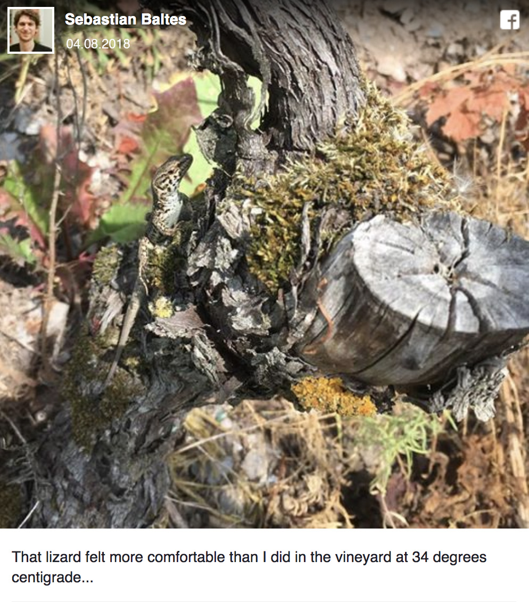
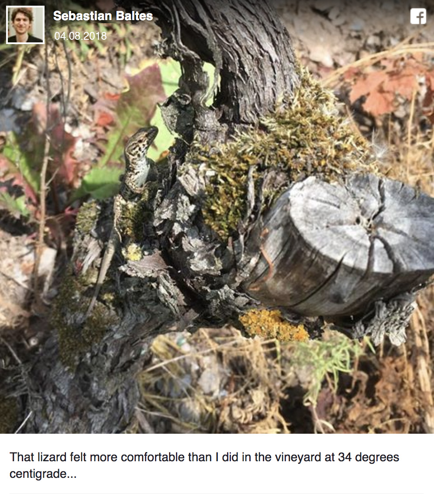

Weingut Ernst Baltes
Weinstraße 15
54441 Ayl
Sebastian Baltes
Wiesenweg 9
54441 Mannebach
E-Mail: siehe oben
Telefon: +49 6581 8273011
Wir erhalten im Rahmen des vom Ministerium für Wirtschaft, Verkehr, Landwirtschaft und Weinbau verwalteten rheinland-pfälzischen Entwicklungsprogramms "Umweltmaßnahmen, Ländliche Entwicklung, Landwirtschaft, Ernährung" (EULLE) durch den Europäischen Landwirtschaftsfonds für die Entwicklung des ländlichen Raums (ELER) und kofinanziert durch das Land eine Förderung für unsere Leistungen in der Agrar- und Klimamaßnahme: Umweltschonender Steil- und Steilstlagenweinbau.